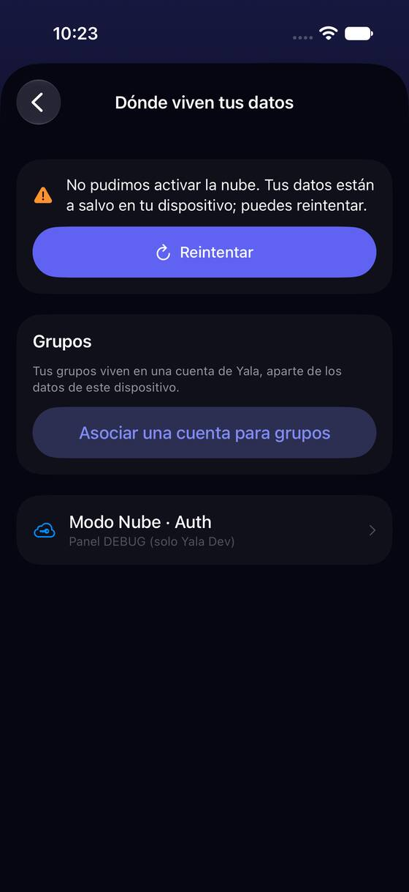
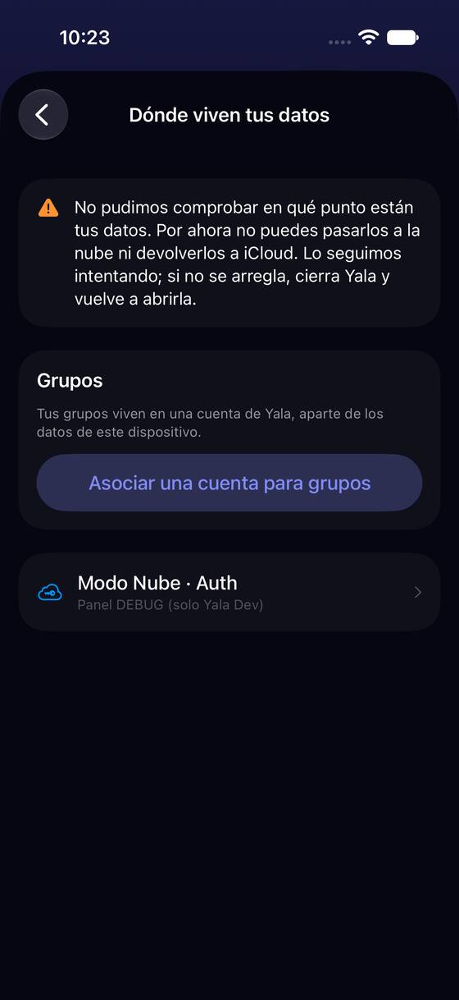

Los fallos son párrafos de hasta 394 caracteres con un solo botón, «Reintentar», aunque el arreglo esté en otro sitio
Hoy
Capturas del simulador (app de origin/2.3, semillas de prueba). Pasos hoy: 1 botón para 21 motivos de fallo de la activación


De dónde sale
- Captura Capturas p-fallo y p-diario-ilegible (ganchos
-uitest-migration-failedy-uitest-migration-journal-unreadable). - Medido Contado en
es.lproj: 43 textosstorage.failed.*,reverseAbort.*,errors.*yjournalUnreadable; 4 con «Escríbenos a…», 4 que mandan a Ajustes o a liberar espacio. - Código
StorageSettingsView.failedCard: unYalaPrimaryButton(L10n.Storage.Progress.retry)y nada más; el texto lo eligeStorageFailureCopyLogic.
Las opciones
De 3 a 5 alternativas con el mismo caso. Desliza cada recorrido; el anillo cian marca dónde toca Lucía.
Un aviso en tres partes: qué pasó, dónde están tus datos, qué hacer (con su botón)
Cada fallo se escribe igual: una línea de qué pasó, una fila fija «Tus datos: siguen en este iPhone» (o en la nube), y qué hacer con el botón que lo hace: «Abrir Ajustes de iCloud», «Escribir a soporte» (con el detalle técnico dentro) o «Reintentar». Lo largo (el porqué técnico) va plegado en «Por qué pasó».
iCloud se quedó sin espacio.
Libera espacio en iCloud y vuelve a intentarlo.
Ahora mismo no podemos darte acceso a esta cuenta.
Esa cuenta ya tiene datos que no coinciden con los de este iPhone.
Comprueba que entras con la cuenta correcta.
Si es la tuya y este iPhone usa el mismo iCloud, espera a que iCloud termine de traer tus datos y vuelve a intentarlo.
A favor
- La pregunta que más angustia («¿perdí algo?») se contesta siempre en el mismo sitio.
- Cuando el arreglo está fuera de Yala, el botón lleva ahí: hoy el texto lo dice y el único botón es «Reintentar».
- Los 43 textos de fallo se reescriben con una plantilla; la severidad no cambia.
En contra
- Reescribir 43 textos en 16 idiomas.
- «Abrir Ajustes de iCloud» abre Ajustes de iOS, no la página exacta (iOS no lo permite).
El mismo texto, con un segundo botón según el caso
No se reescribe nada: la tarjeta suma un botón cuando el texto manda a otro sitio («Abrir Ajustes» si dice iCloud, «Escribir a soporte» si da un correo).
A favor
- Barato: un mapa de motivo → botón.
- Quita el callejón del correo escrito en el texto.
En contra
- Siguen los párrafos de hasta 394 caracteres.
- «Tus datos están a salvo» sigue en sitios distintos en cada texto.
Una línea arriba y el resto en «Más información»
La tarjeta enseña solo la primera frase y «Tus datos están a salvo»; el resto del texto de hoy, sin tocarlo, va en «Más información». «Reintentar» se queda.
Tus datos están a salvo en este iPhone.
Tus datos están a salvo en este iPhone.
Esa cuenta ya tiene datos en la nube y los de este dispositivo no coinciden con ellos, así que no los juntamos. Comprueba que entras con la cuenta correcta…
A favor
- No se reescribe nada.
- La pantalla deja de abrir con un muro de texto.
En contra
- Lo que hay que hacer queda plegado: quien no abre no lo ve.
- «Reintentar» sigue siendo el único botón aunque no sirva (iCloud lleno).
Lado a lado
La última pantalla de cada recorrido, frente a hoy.
Esa cuenta ya tiene datos que no coinciden con los de este iPhone.
Comprueba que entras con la cuenta correcta.
Si es la tuya y este iPhone usa el mismo iCloud, espera a que iCloud termine de traer tus datos y vuelve a intentarlo.
Tus datos están a salvo en este iPhone.
Esa cuenta ya tiene datos en la nube y los de este dispositivo no coinciden con ellos, así que no los juntamos. Comprueba que entras con la cuenta correcta…
Comparación
| Opción | Pasos para el caso (maqueta) | Esfuerzo | Riesgo | Reabre |
|---|---|---|---|---|
| Hoy | 1 botón para 21 motivos de fallo de la activación | — | — | — |
| E1 · Un aviso en tres partes: qué pasó, dónde están tus datos, qué hacer (con su botón) | 1 toque hasta el arreglo (hoy: leer, salir de Yala, buscar) | medio | bajo | — |
| E2 · El mismo texto, con un segundo botón según el caso | 1 toque hasta el arreglo | bajo | bajo | — |
| E3 · Una línea arriba y el resto en «Más información» | 1 toque más para saber qué hacer | bajo | medio | — |
Lente de perfiles
Perfiles simulados, no entrevistas Los siete perfiles de la revisión del usuario nuevo, usados como lentes. riesgo alto de trabarse · medio · bajo.
| Perfil | Hoy | E1 | E2 | E3 |
|---|---|---|---|---|
| P1 · Migrante de Excel | lee de más | sus datos, a salvo | lee el párrafo | — |
| P2 · Principiante abrumado | párrafo técnico | tres partes | párrafo | corto |
| P3 · Anotador rápido que no lee | reintenta sin arreglar | el botón lo hace | ve el botón | reintenta sin arreglar |
| P4 · Experto de otra app | copia el correo | «por qué» a mano | bien | abre |
| P5 · Llega por una invitación de grupo | — | — | — | — |
| P6 · Varias monedas y tarjeta | fallos de iCloud lleno | — | — | — |
| P7 · Texto grande, a veces en iPad | 394 caracteres | menos texto | párrafo largo | corto |
Recomendación: E1
Contesta siempre primero lo que angustia (dónde están mis datos) y da el botón que arregla. Si no hay tiempo para reescribir 43 textos, E2 primero: el botón que falta es lo que más frena.
Qué decide Jürgen
- ¿Plantilla de tres partes con el botón que arregla (E1), o solo el segundo botón (E2) por ahora?
- ¿«Escribir a soporte» abre el correo con el detalle técnico, como ya hace «Sincronización iCloud»?
Revisión por vistas 2.3 · Dónde viven tus datos: nube, iCloud y cierre de sesión. Maquetas en HTML con datos ficticios: no son la app. Pasos contados sobre las maquetas; los de «Hoy», en el simulador o en el código citado.